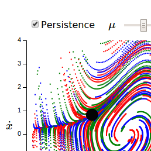
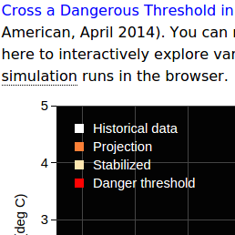
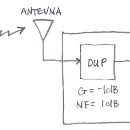

Scientific computing for the web.
Create your own interactive computation directly in the browser. Share on the web.
Puzlet is a set of software libraries for scientific computing in web pages. The heart of Puzlet is the blab — short for web lab. A blab is a web page for interactive computation and graphics.
Blabr

Blabr is a web app built on the Puzlet foundation. Blabr makes it easy for you to create your own blabs. It comes with a whole lot of demos and examples to get you started.
Space Math

Each of the Space Math blabs lets students experiment with a variety of mathematical models for planetary structure, heat flow and rotation among other modeled properties.
A common feature is to interactively 'fit' real-world data with a linear equation, where sliders control the slope and intercept values.
The blabs are adapted from Space Math @ NASA ILabs.
STEMblab
This repository includes a medley of blabs from the STEM fields—science, technology, engineering and mathematics. Examples: compressive sensing, Van der Pol oscillator, Fermi Pasta Ulam, Weierstrass functions, and solitons.
Climate Modelling
This repository includes blabs related to energy balance models, global warming trends, climate projections, and climate change mitigation.
Toy Problem

In scientific disciplines, a toy problem is a problem that is not of immediate scientific interest,
yet is used as an expository device to illustrate a trait that may be shared by other, more complicated,
instances of the problem, or as a way to explain a particular, more general, problem solving technique.
— Wikipedia (12/01/14)
This repository includes a range of interesting toy problems related to power spectral density, mobile noise figure, and feedback control.
Developed by Martin Clark and Gary Ballantyne (Haulashore Limited). Follow us on Twitter.